import pandas as pd
import numpy as np
from matplotlib import pyplot as plt
import seaborn as sns
import matplotlib
from fklearn.causal.validation.curves import relative_cumulative_gain_curve
from fklearn.causal.validation.auc import area_under_the_relative_cumulative_gain_curve
from cycler import cycler
color = ["0.0", "0.4", "0.8"]
default_cycler = cycler(color=color)
linestyle = ["-", "--", ":", "-."]
marker = ["o", "v", "d", "p"]
plt.rc("axes", prop_cycle=default_cycler)7장 - 메타러너
7.1 이산형 처치 메타러너
pd.set_option("display.max_columns", 8)import pandas as pd
data_biased = pd.read_csv("../data/email_obs_data.csv")
data_rnd = pd.read_csv("../data/email_rnd_data.csv")
print(len(data_biased), len(data_rnd))
data_rnd.head()300000 10000| mkt_email | next_mnth_pv | age | tenure | ... | jewel | books | music_books_movies | health | |
|---|---|---|---|---|---|---|---|---|---|
| 0 | 0 | 244.26 | 61.0 | 1.0 | ... | 1 | 0 | 0 | 2 |
| 1 | 0 | 29.67 | 36.0 | 1.0 | ... | 1 | 0 | 2 | 2 |
| 2 | 0 | 11.73 | 64.0 | 0.0 | ... | 0 | 1 | 0 | 1 |
| 3 | 0 | 41.41 | 74.0 | 0.0 | ... | 0 | 4 | 1 | 0 |
| 4 | 0 | 447.89 | 59.0 | 0.0 | ... | 1 | 1 | 2 | 1 |
5 rows × 27 columns
y = "next_mnth_pv"
T = "mkt_email"
X = list(data_rnd.drop(columns=[y, T]).columns)
train, test = data_biased, data_rnd7.1.1 T 러너
from lightgbm import LGBMRegressor
np.random.seed(123)
m0 = LGBMRegressor()
m1 = LGBMRegressor()
m0.fit(train.query(f"{T}==0")[X], train.query(f"{T}==0")[y])
m1.fit(train.query(f"{T}==1")[X], train.query(f"{T}==1")[y]);t_learner_cate_test = test.assign(cate=m1.predict(test[X]) - m0.predict(test[X]))gain_curve_test = relative_cumulative_gain_curve(
t_learner_cate_test, T, y, prediction="cate"
)
auc = area_under_the_relative_cumulative_gain_curve(
t_learner_cate_test, T, y, prediction="cate"
)
plt.figure(figsize=(10, 4))
plt.plot(gain_curve_test, color="C0", label=f"AUC: {auc:.2f}")
plt.hlines(0, 0, 100, linestyle="--", color="black", label="Baseline")
plt.legend()
plt.title("T-Learner")Text(0.5, 1.0, 'T-Learner')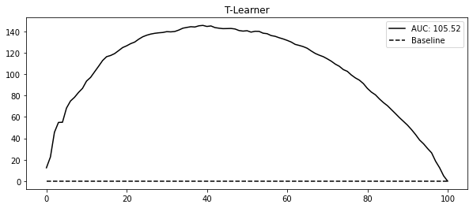
np.random.seed(123)
def g_kernel(x, c=0, s=0.05):
return np.exp((-((x - c) ** 2)) / s)
n0 = 500
x0 = np.random.uniform(-1, 1, n0)
y0 = np.random.normal(0.3 * g_kernel(x0), 0.1, n0)
n1 = 50
x1 = np.random.uniform(-1, 1, n1)
y1 = np.random.normal(0.3 * g_kernel(x1), 0.1, n1) + 1
df = pd.concat(
[pd.DataFrame(dict(x=x0, y=y0, t=0)), pd.DataFrame(dict(x=x1, y=y1, t=1))]
).sort_values(by="x")
m0 = LGBMRegressor(min_child_samples=25)
m1 = LGBMRegressor(min_child_samples=25)
m0.fit(x0.reshape(-1, 1), y0)
m1.fit(x1.reshape(-1, 1), y1)
m0_hat = m0.predict(df.query("t==0")[["x"]])
m1_hat = m1.predict(df.query("t==1")[["x"]])
fig, (ax1, ax2) = plt.subplots(2, 1, figsize=(10, 10))
ax1.scatter(x0, y0, alpha=0.5, label="T=0", marker=marker[0], color=color[1])
ax1.scatter(x1, y1, alpha=0.7, label="T=1", marker=marker[1], color=color[0])
ax1.plot(
df.query("t==0")[["x"]],
m0_hat,
color="black",
linestyle="solid",
label="$\hat{\mu}_0$",
)
ax1.plot(
df.query("t==1")[["x"]],
m1_hat,
color="black",
linestyle="--",
label="$\hat{\mu}_1$",
)
ax1.set_ylabel("Y")
ax1.set_xlabel("X")
ax1.legend(fontsize=14)
tau_0 = m1.predict(df.query("t==0")[["x"]]) - df.query("t==0")["y"]
tau_1 = df.query("t==1")["y"] - m0.predict(df.query("t==1")[["x"]])
ax2.scatter(
df.query("t==0")[["x"]],
tau_0,
label="$\hat{\\tau_0}$",
alpha=0.5,
marker=marker[0],
color=color[1],
)
ax2.scatter(
df.query("t==1")[["x"]],
tau_1,
label="$\hat{\\tau_1}$",
alpha=0.7,
marker=marker[1],
color=color[0],
)
ax2.plot(
df[["x"]],
m1.predict(df[["x"]]) - m0.predict(df[["x"]]),
label="$\hat{CATE}$",
color="black",
)
ax2.set_ylabel("Estimated Effect")
ax2.set_xlabel("X")
ax2.legend(fontsize=14)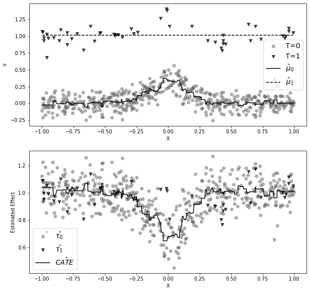
7.1.2 X 러너
from sklearn.linear_model import LogisticRegression
np.random.seed(42)
mu_tau0 = LGBMRegressor(min_child_samples=25)
mu_tau1 = LGBMRegressor(min_child_samples=25)
mu_tau0.fit(df.query("t==0")[["x"]], tau_0)
mu_tau1.fit(df.query("t==1")[["x"]], tau_1)
mu_tau0_hat = mu_tau0.predict(df.query("t==0")[["x"]])
mu_tau1_hat = mu_tau1.predict(df.query("t==1")[["x"]])
plt.figure(figsize=(10, 4))
plt.scatter(
df.query("t==0")[["x"]],
tau_0,
label="$\hat{\\tau_0}$",
alpha=0.5,
marker=marker[0],
color=color[1],
)
plt.scatter(
df.query("t==1")[["x"]],
tau_1,
label="$\hat{\\tau_1}$",
alpha=0.8,
marker=marker[1],
color=color[0],
)
plt.plot(
df.query("t==0")[["x"]],
mu_tau0_hat,
color="black",
linestyle="solid",
label="$\hat{\mu}\\tau 0$",
)
plt.plot(
df.query("t==1")[["x"]],
mu_tau1_hat,
color="black",
linestyle="dashed",
label="$\hat{\mu}\\tau_1$",
)
plt.ylabel("Estimated Effect")
plt.xlabel("X")
plt.legend(fontsize=14)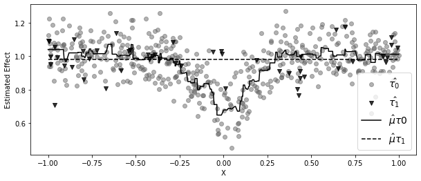
plt.figure(figsize=(10, 4))
ps_model = LogisticRegression(penalty="none")
ps_model.fit(df[["x"]], df["t"])
ps = ps_model.predict_proba(df[["x"]])[:, 1]
cate = (1 - ps) * mu_tau1.predict(df[["x"]]) + ps * mu_tau0.predict(df[["x"]])
plt.scatter(
df.query("t==0")[["x"]],
tau_0,
label="$\hat{\\tau_0}$",
alpha=0.5,
s=100 * (ps[df["t"] == 0]),
marker=marker[0],
color=color[1],
)
plt.scatter(
df.query("t==1")[["x"]],
tau_1,
label="$\hat{\\tau_1}$",
alpha=0.5,
s=100 * (1 - ps[df["t"] == 1]),
marker=marker[1],
color=color[0],
)
plt.plot(df[["x"]], cate, label="x-learner", color="black")
plt.ylabel("Estimated Effect")
plt.xlabel("X")
plt.legend(fontsize=14)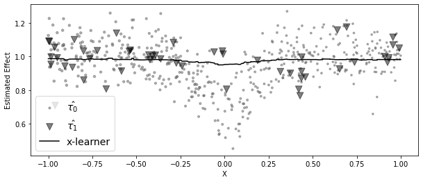
from sklearn.linear_model import LogisticRegression
from lightgbm import LGBMRegressor
# propensity score model
ps_model = LogisticRegression(penalty="none")
ps_model.fit(train[X], train[T])
# first stage models
train_t0 = train.query(f"{T}==0")
train_t1 = train.query(f"{T}==1")
m0 = LGBMRegressor()
m1 = LGBMRegressor()
np.random.seed(123)
m0.fit(
train_t0[X],
train_t0[y],
sample_weight=1 / ps_model.predict_proba(train_t0[X])[:, 0],
)
m1.fit(
train_t1[X],
train_t1[y],
sample_weight=1 / ps_model.predict_proba(train_t1[X])[:, 1],
);# second stage
tau_hat_0 = m1.predict(train_t0[X]) - train_t0[y]
tau_hat_1 = train_t1[y] - m0.predict(train_t1[X])
m_tau_0 = LGBMRegressor()
m_tau_1 = LGBMRegressor()
np.random.seed(123)
m_tau_0.fit(train_t0[X], tau_hat_0)
m_tau_1.fit(train_t1[X], tau_hat_1);# estimate the CATE
ps_test = ps_model.predict_proba(test[X])[:, 1]
x_cate_test = test.assign(
cate=(ps_test * m_tau_0.predict(test[X]) + (1 - ps_test) * m_tau_1.predict(test[X]))
)gain_curve_test = relative_cumulative_gain_curve(x_cate_test, T, y, prediction="cate")
auc = area_under_the_relative_cumulative_gain_curve(
x_cate_test, T, y, prediction="cate"
)
plt.figure(figsize=(10, 4))
plt.plot(gain_curve_test, color="C0", label=f"AUC: {auc:.2f}")
plt.hlines(0, 0, 100, linestyle="--", color="black", label="Baseline")
plt.legend()
plt.title("X-Learner")Text(0.5, 1.0, 'X-Learner')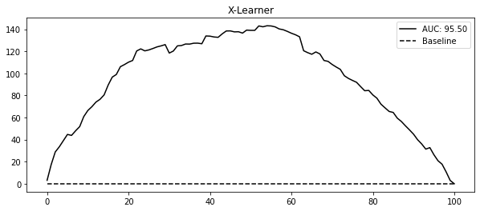
7.2 연속형 처치 메타러너
data_cont = pd.read_csv("../data/discount_data.csv")
data_cont.head()| rest_id | day | month | weekday | ... | is_nov | competitors_price | discounts | sales | |
|---|---|---|---|---|---|---|---|---|---|
| 0 | 0 | 2016-01-01 | 1 | 4 | ... | False | 2.88 | 0 | 79.0 |
| 1 | 0 | 2016-01-02 | 1 | 5 | ... | False | 2.64 | 0 | 57.0 |
| 2 | 0 | 2016-01-03 | 1 | 6 | ... | False | 2.08 | 5 | 294.0 |
| 3 | 0 | 2016-01-04 | 1 | 0 | ... | False | 3.37 | 15 | 676.5 |
| 4 | 0 | 2016-01-05 | 1 | 1 | ... | False | 3.79 | 0 | 66.0 |
5 rows × 11 columns
train = data_cont.query("day<'2018-01-01'")
test = data_cont.query("day>='2018-01-01'")7.2.1 S 러너
X = ["month", "weekday", "is_holiday", "competitors_price"]
T = "discounts"
y = "sales"
np.random.seed(123)
s_learner = LGBMRegressor()
s_learner.fit(train[X + [T]], train[y]);t_grid = pd.DataFrame(dict(key=1, discounts=np.array([0, 10, 20, 30, 40])))
test_cf = (
test.drop(columns=["discounts"])
.assign(key=1)
.merge(t_grid)
# make predictions after expansion
.assign(sales_hat=lambda d: s_learner.predict(d[X + [T]]))
)
test_cf.head(8)| rest_id | day | month | weekday | ... | sales | key | discounts | sales_hat | |
|---|---|---|---|---|---|---|---|---|---|
| 0 | 0 | 2018-01-01 | 1 | 0 | ... | 251.5 | 1 | 0 | 67.957972 |
| 1 | 0 | 2018-01-01 | 1 | 0 | ... | 251.5 | 1 | 10 | 444.245941 |
| 2 | 0 | 2018-01-01 | 1 | 0 | ... | 251.5 | 1 | 20 | 793.045769 |
| 3 | 0 | 2018-01-01 | 1 | 0 | ... | 251.5 | 1 | 30 | 1279.640793 |
| 4 | 0 | 2018-01-01 | 1 | 0 | ... | 251.5 | 1 | 40 | 1512.630767 |
| 5 | 0 | 2018-01-02 | 1 | 1 | ... | 541.0 | 1 | 0 | 65.672080 |
| 6 | 0 | 2018-01-02 | 1 | 1 | ... | 541.0 | 1 | 10 | 495.669220 |
| 7 | 0 | 2018-01-02 | 1 | 1 | ... | 541.0 | 1 | 20 | 1015.401471 |
8 rows × 13 columns
days = ["2018-12-25", "2018-01-01", "2018-06-01", "2018-06-18"]
plt.figure(figsize=(10, 4))
sns.lineplot(
data=test_cf.query("day.isin(@days)").query("rest_id==2"),
palette="gray",
y="sales_hat",
x="discounts",
style="day",
);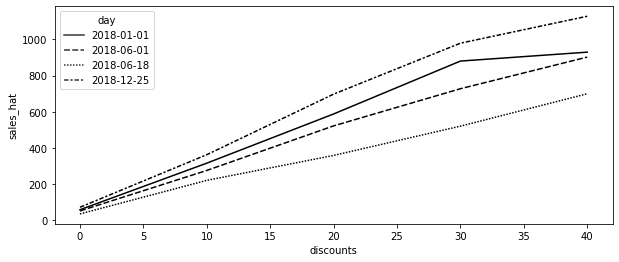
from toolz import curry
@curry
def linear_effect(df, y, t):
return np.cov(df[y], df[t])[0, 1] / df[t].var()
cate = (
test_cf.groupby(["rest_id", "day"])
.apply(linear_effect(t="discounts", y="sales_hat"))
.rename("cate")
)
test_s_learner_pred = test.set_index(["rest_id", "day"]).join(cate)
test_s_learner_pred.head()| month | weekday | weekend | is_holiday | ... | competitors_price | discounts | sales | cate | ||
|---|---|---|---|---|---|---|---|---|---|---|
| rest_id | day | |||||||||
| 0 | 2018-01-01 | 1 | 0 | False | True | ... | 4.92 | 5 | 251.5 | 37.247404 |
| 2018-01-02 | 1 | 1 | False | False | ... | 3.06 | 10 | 541.0 | 40.269854 | |
| 2018-01-03 | 1 | 2 | False | False | ... | 4.61 | 10 | 431.0 | 37.412988 | |
| 2018-01-04 | 1 | 3 | False | False | ... | 4.84 | 20 | 760.0 | 38.436815 | |
| 2018-01-05 | 1 | 4 | False | False | ... | 6.29 | 0 | 78.0 | 31.428603 |
5 rows × 10 columns
from fklearn.causal.validation.auc import area_under_the_relative_cumulative_gain_curve
from fklearn.causal.validation.curves import relative_cumulative_gain_curve
gain_curve_test = relative_cumulative_gain_curve(
test_s_learner_pred, T, y, prediction="cate"
)
auc = area_under_the_relative_cumulative_gain_curve(
test_s_learner_pred, T, y, prediction="cate"
)
plt.figure(figsize=(10, 4))
plt.plot(gain_curve_test, color="C0", label=f"AUC: {auc:.2f}")
plt.hlines(0, 0, 100, linestyle="--", color="black", label="Baseline")
plt.legend()
plt.title("S-Learner")Text(0.5, 1.0, 'S-Learner')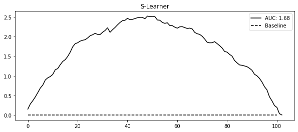
np.random.seed(123)
def sim_s_learner_ate():
n = 10000
nx = 20
X = np.random.normal(0, 1, (n, nx))
coefs_y = np.random.uniform(-1, 1, nx)
coefs_t = np.random.uniform(-0.5, 0.5, nx)
ps = 1 / (1 + np.exp(-(X.dot(coefs_t))))
t = np.random.binomial(1, ps)
te = 1
y = np.random.normal(t * te + X.dot(coefs_y), 1)
s_learner = LGBMRegressor(max_depth=5, n_jobs=4)
s_learner.fit(np.concatenate([X, t.reshape(-1, 1)], axis=1), y)
ate_hat = (
s_learner.predict(np.concatenate([X, np.ones((n, 1))], axis=1))
- s_learner.predict(np.concatenate([X, np.zeros((n, 1))], axis=1))
).mean()
return ate_hat
ates = [sim_s_learner_ate() for _ in range(500)]
plt.figure(figsize=(10, 4))
plt.hist(ates, alpha=0.5, bins=20, label="Simulations")
plt.vlines(1, 0, 70, label="True ATE")
plt.legend()
plt.xlabel("ATE")
plt.title("500 Simulations")Text(0.5, 1.0, '500 Simulations')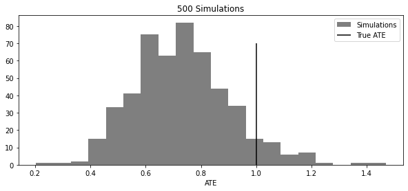
7.2.2 이중/편향 제거 머신러닝
from sklearn.model_selection import cross_val_predict
X = ["month", "weekday", "is_holiday", "competitors_price"]
T = "discounts"
y = "sales"
debias_m = LGBMRegressor()
denoise_m = LGBMRegressor()
t_res = train[T] - cross_val_predict(debias_m, train[X], train[T], cv=5)
y_res = train[y] - cross_val_predict(denoise_m, train[X], train[y], cv=5)import statsmodels.api as sm
sm.OLS(y_res, t_res).fit().summary().tables[1]| coef | std err | t | P>|t| | [0.025 | 0.975] | |
|---|---|---|---|---|---|---|
| discounts | 31.4615 | 0.151 | 208.990 | 0.000 | 31.166 | 31.757 |
이중 머신러닝으로 CATE 추정
y_star = y_res / t_res
w = t_res**2
cate_model = LGBMRegressor().fit(train[X], y_star, sample_weight=w)
test_r_learner_pred = test.assign(cate=cate_model.predict(test[X]))gain_curve_test = relative_cumulative_gain_curve(
test_r_learner_pred, T, y, prediction="cate"
)
auc = area_under_the_relative_cumulative_gain_curve(
test_r_learner_pred, T, y, prediction="cate"
)
plt.figure(figsize=(10, 4))
plt.plot(gain_curve_test, color="C0", label=f"AUC: {auc:.2f}")
plt.hlines(0, 0, 100, linestyle="--", color="black", label="Baseline")
plt.legend()
plt.title("R-Learner")Text(0.5, 1.0, 'R-Learner')이중 머신러닝에 대한 시각적인 직관
np.random.seed(123)
n = 5000
x_h = np.random.randint(1, 4, n)
x_c = np.random.uniform(-1, 1, n)
t = np.random.normal(10 + 1 * x_c + 3 * x_c**2 + x_c**3, 0.3)
y = np.random.normal(t + x_h * t - 5 * x_c - x_c**2 - x_c**3, 0.3)
df_sim = pd.DataFrame(dict(x_h=x_h, x_c=x_c, t=t, y=y))plt.figure(figsize=(10, 5))
cmap = matplotlib.colors.LinearSegmentedColormap.from_list("", ["0.1", "0.5", "0.9"])
sns.scatterplot(data=df_sim, y="y", x="t", hue="x_c", style="x_h", palette=cmap)
plt.legend(fontsize=14)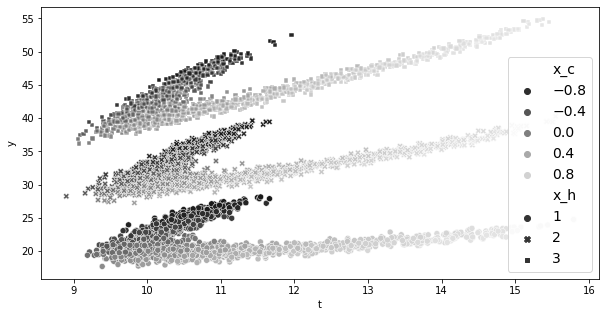
debias_m = LGBMRegressor(max_depth=3)
denoise_m = LGBMRegressor(max_depth=3)
t_res = cross_val_predict(debias_m, df_sim[["x_c"]], df_sim["t"], cv=10)
y_res = cross_val_predict(denoise_m, df_sim[["x_c", "x_h"]], df_sim["y"], cv=10)
df_res = df_sim.assign(t_res=df_sim["t"] - t_res, y_res=df_sim["y"] - y_res)import statsmodels.formula.api as smf
smf.ols("y_res~t_res", data=df_res).fit().params["t_res"]3.045230146006292fig, (ax1, ax2) = plt.subplots(1, 2, figsize=(15, 5))
ax1 = sns.scatterplot(
data=df_res,
y="y_res",
x="t_res",
hue="x_c",
style="x_h",
alpha=0.5,
ax=ax1,
palette=cmap,
)
h, l = ax1.get_legend_handles_labels()
ax1.legend(fontsize=14)
sns.scatterplot(
data=df_res, y="y_res", x="t_res", hue="x_h", ax=ax2, alpha=0.5, palette=cmap
)
ax2.legend(fontsize=14)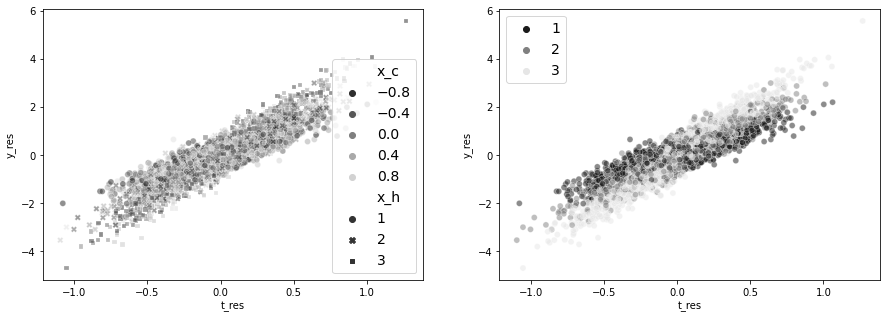
df_star = df_res.assign(
y_star=df_res["y_res"] / df_res["t_res"],
weight=df_res["t_res"] ** 2,
)
for x in range(1, 4):
cate = np.average(
df_star.query(f"x_h=={x}")["y_star"],
weights=df_star.query(f"x_h=={x}")["weight"],
)
print(f"CATE x_h={x}", cate)CATE x_h=1 2.019759619990067
CATE x_h=2 2.974967932350952
CATE x_h=3 3.9962382855476957plt.figure(figsize=(10, 6))
(
sns.scatterplot(
data=df_star,
palette=cmap,
y="y_star",
x="t_res",
hue="x_h",
size="weight",
sizes=(1, 100),
),
)
plt.hlines(
np.average(
df_star.query("x_h==1")["y_star"], weights=df_star.query("x_h==1")["weight"]
),
-1,
1,
label="x_h=1",
color="0.1",
)
plt.hlines(
np.average(
df_star.query("x_h==2")["y_star"], weights=df_star.query("x_h==2")["weight"]
),
-1,
1,
label="x_h=2",
color="0.5",
)
plt.hlines(
np.average(
df_star.query("x_h==3")["y_star"], weights=df_star.query("x_h==3")["weight"]
),
-1,
1,
label="x_h=3",
color="0.9",
)
plt.ylim(-1, 8)
plt.legend(fontsize=12)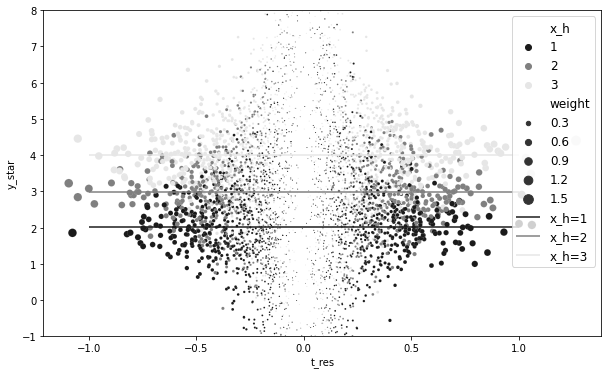